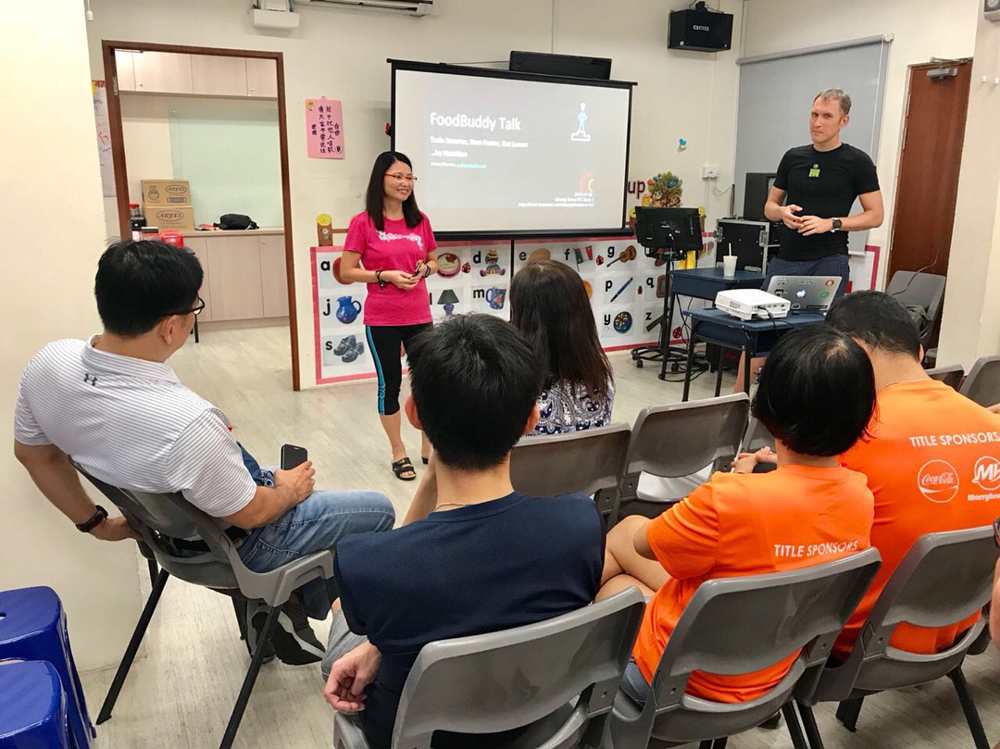
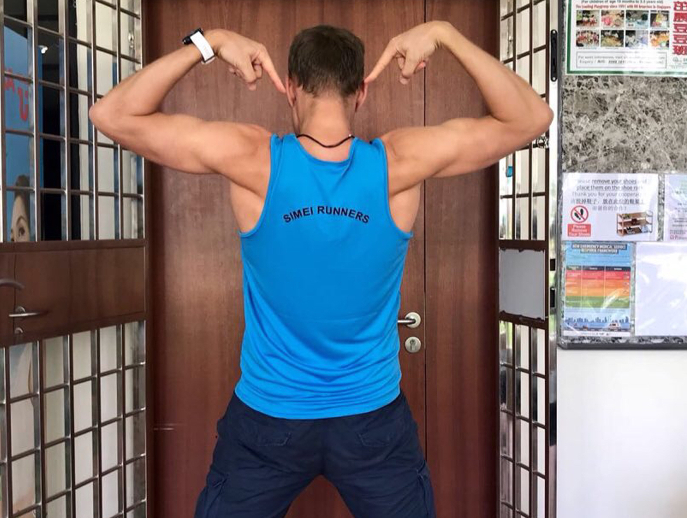

Preparation to @sgmarathon is full steam in #Singapore. I had priveledge to share my knowledge on endurance nutrition at a Runners' workshop, organized by government's Residents' Committee in Changi Simei district. Quite a lot of Singapore citizens and permanent residents living and running around my area came over and asked great questions. I found out that cousin of Changi Simei's running club "Simei Runners" was an old-time Marathon national record holder! Small world, and great pedigree right there! #changisimei #simei #singaporean #sgrunners #singaporeeats #singaporefood
2018-07-10 00:58:49
Back to main page